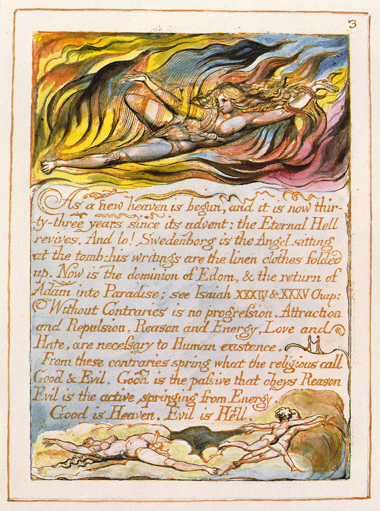
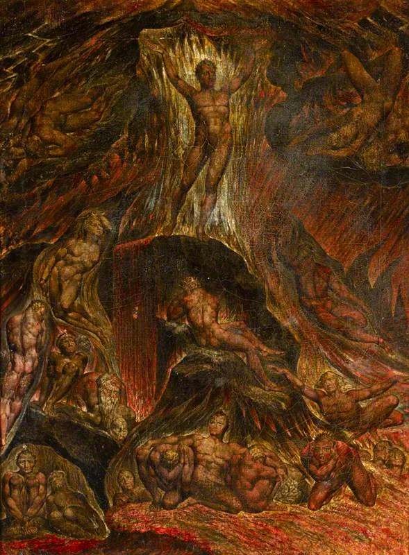

In 1808, William Blake sat down to paint the devil. Not a horned grotesque from a medieval woodcut, but something stranger. His Satan is golden, muscular, classical. The figure hovers above Adam and Eve with what looks almost like grief. Blake had been hired to illustrate Paradise Lost, and he turned Milton's villain into the most compelling figure on the page.
This was not an accident. Blake had been thinking about Milton for nearly two decades by then, and he had already come to a conclusion that still startles: Milton's real sympathies lay with Satan. The poet who set out to justify the ways of God to men had, in Blake's reading, done something far more interesting. He had written the devil into the centre of English literature.
Blake's twelve watercolour illustrations for Paradise Lost are strange and luminous. Satan is never ugly. In one plate he watches Adam and Eve embrace, his body twisted with longing. In another he stands at the gates of Hell, an athlete more than a monster. Blake painted angels too, but they sit stiff and bloodless beside the devil's raw energy. The contrast is the whole point.
The party of energy
The argument had already been made in print. Between 1790 and 1793, Blake etched The Marriage of Heaven and Hell, a wild, illuminated book that scrambles theology into something closer to poetry. Its most famous line lands like a grenade: Milton "was a true Poet and of the Devil's party without knowing it."

What did Blake mean by this? Not that Milton worshipped evil. Blake's argument is subtler. In The Marriage, he divides the world into two camps. "Angels" represent reason, restraint, obedience. "Devils" represent energy, desire, creative force. Heaven is passive. Hell is alive. The categories are moral only in a twisted, ironic sense. Blake uses biblical language against itself.
Milton, Blake argued, understood this instinctively. When Satan speaks in Paradise Lost, the verse catches fire. When God speaks, it cools to something formal and dutiful. The music of the poem betrays the official theology. Milton wrote of angels in fetters and of devils at liberty. That discrepancy, for Blake, was the poem's secret confession.
Energy, in Blake's system, is not merely preferred. It is sacred. "Energy is Eternal Delight," he wrote. The Proverbs of Hell that fill The Marriage are declarations of excess and appetite: "The road of excess leads to the palace of wisdom." "No bird soars too high, if he soars with his own wings." These read less like satire than like gospel.
The reason Milton wrote in fetters when he wrote of Angels and God, and at liberty when of Devils and Hell, is because he was a true Poet and of the Devil's party without knowing it.
William Blake, The Marriage of Heaven and Hell
Illustrating the opposition
Blake's visual language mattered as much as his words. He worked in watercolour and engraving, often combining the two. His illuminated books were printed from copper plates on which he had etched both text and image together, then hand-coloured each copy. No two are identical. The process was slow, expensive, and almost entirely ignored during his lifetime.
This method shaped how Blake read Milton. For Blake, a poem was never just words on a page. It was a visual event, a body of light and colour. When he illustrated Paradise Lost, he was not decorating someone else's text. He was translating it into a language he considered more complete. Image and word together. The illuminated page.

His Satan illustrations do something specific. They refuse to make the devil repulsive. Satan's body echoes classical sculpture. His face carries intelligence. In the plate showing Satan's expulsion, Blake paints him falling headfirst, but the figure retains a terrible dignity. The viewer is not asked to pity Satan. The viewer is asked to look at him without flinching.
This was Blake's deepest break with orthodoxy. Milton's poem contains a moral framework in which Satan is wrong. Blake did not dispute that framework. He overturned it. The Marriage of Heaven and Hell does not argue that Milton made a mistake. It argues that the entire structure of moral authority, the division of the world into good and evil, reason and passion, obedience and rebellion, is itself the mistake.
Blake was not the last to claim Milton for the devil's party. Percy Shelley picked up the argument a generation later. So did the Romantics who followed. But Blake got there first, and he got there with a paintbrush as much as a pen. His Paradise Lost illustrations remain among the most unsettling readings of the poem ever produced. Not because they shock, but because they ask a question that Milton's theology cannot quite answer: what if the devil is the one who sees clearly?
The question still hangs. Blake never resolved it, and perhaps resolution was never the point. The Marriage of Heaven and Hell ends not with a conclusion but with a song. Energy against reason. Desire against duty. The party continues.